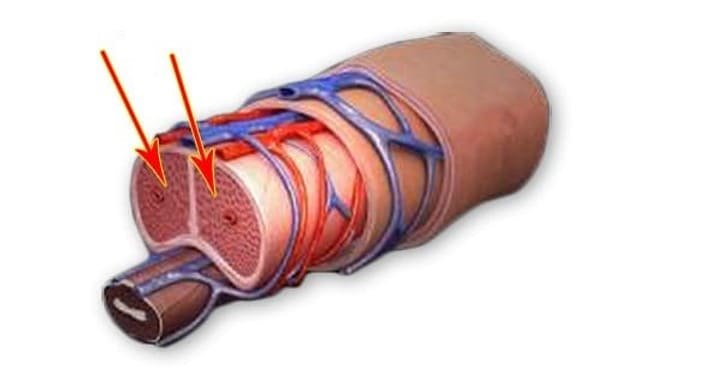

CUM DE A ÎNTOARCE POTENȚA DUPĂ 50 DE ANI FĂRĂ CHIMIE? - E SIMPLU!
Nu este un secret că mulți bărbați după 50 de ani, iar unii și mai devreme, încep să aibă probleme cu potența. Pentru a afla mai multe despre această problemă și, cel mai important, despre ceea cum să o rezolvăm, am invitat la un interviu un urolog-androlog, profesor Mihai Lozovanu.Jurnalist: Voi începe cu o întrebare foarte importantă: de ce bărbații au probleme cu potența?
Doctor: Explicația este simplă. De-a lungul anilor, organismul începe să producă mai puțin testosteron. Testosteronul este principalul hormon masculin. El este responsabil pentru activitatea sexuală, joacă un rol important în producția de spermatozoizi. Aceasta se datorează conceptului "virilitate". Cu cât testosteron este mai mult în sânge, cu atât este mai mare încrederea de sine, starea de spirit mai bună și, desigur, excitarea este mai rapidă și mai puternică. La bărbați, acesta este produs în testicule. Norma este când concentrația sa în sânge este de 11-33 nmol/l. Dar, după 45-50 de ani, sau chiar mai devreme, performanța testiculelor începe să scadă și, împreună cu aceasta, concentrația de testosteron în sânge. Urmează o pauză androgenică, din cauza căreia se poate dezvolta impotență completă.
Simptomele impotenței care se apropie:
- Reducerea dispoziției, încrederii de sine
- Reducerea creșterii părului pe cap, față și corp
- Reducerea masei musculare, oboseală rapidă
- Reducerea dorinței sexuale
- Insomnie, iritabilitate
- Anemie
- Apariția abdomenului
- O erecție instabilă sau absentă
- Infertilitate
Jurnalist: La ce concentrație de testosteron în sânge, un bărbat începe să aibă probleme cu potența?
Doctor: Totul în mod individual, dar la 8-9 nmol/l, problemele se vor începe deja. La 5-6 nmol/l "eșecuri" în relațiile intime cu femeile dobândesc un caracter regulat. Cu acest indicator apar "primele clopote" ale impotenței care se apropie. De asemenea, se generează teama de intimitate din cauza unui posibil eșec, iar bărbații recurg la diverse stimulenți.
Jurnalist: La Viagra, de exemplu?
Doctor: Viagra este cel mai cunoscut medicament sintetic, dar în același timp foarte periculos. Nu le-aș recomanda Viagră și medicamente similare, sau numai sub supravegherea strictă a unui medic. În primul rând, există prea multe efecte secundare; în al doilea rând, dacă ceva nu este în regulă cu inima, atunci în cel mai bun caz, puteți fi în spital, în cel mai rău caz - pe altă lume.
Jurnalist: Există șanse de a întări potența în mod natural - prin renunțarea la alcoolul, fumatul, alimentația corectă, educația fizică?
Doctor: Stilul de viaţă sănătos contează, dar există un alt factor mai important – îmbătrânirea corpului. După cum au arătat studiile, la bărbați după 45 de ani, indiferent de stilul de viaţă sănătos, concentrația de testosteron în sânge scade anual cu 2-3%. Există, desigur, unii bărbați care reușesc și la bătrânețe să mențină un nivel ridicat de testosteron, dar aceasta este mai degrabă o excepție.
Jurnalist: Adică, pentru a menține potența după 50 de ani, este necesar să se utilizeze remedii pentru a o crește?
Doctor: Da, fără asta nu se poate. Dar puțini oameni știu ce trebuie să folosească pentru a nu provoca daune ireparabile sănătății lor. Eu și grupul elevilor mei monitorizăm în mod constant medicamentele care apar pe piață. Pot să spun că până de curând nu existau remedii pentru creșterea potenței în condiții de siguranță pentru sănătate. Toate medicamentele cunoscute au efecte secundare și cu administrare prelungită pot eșua inima, ficatul și alte organe. Și toate aceștia sunt la un preț nerezonabil ridicat.
Jurnalist: Ați spus până de curând. Adică, a apărut un mijloc care este eficient și sigur?
Doctor: Aveți dreptate, am făcut recent cercetări cu privire la remediu, rezultatele căruia ne-au plăcut foarte mult.
Jurnalist: Și ce reprezintă acest remediu? Care sunt similaritățile și diferențele sale cu aceeași Viagra?
Doctor: Acest remediu se numește . Spre deosebire de Viagra, conține două complexe de substanțe. Unul este responsabil pentru excitare rapidă, în termen de 5-7 minute de la administrare. Al doilea complex stimulează testiculele și își restabilește treptat funcțiile. Prin urmare, putem spune că de la prima administrare acționează puternic ca un stimulent, dar, în plus, crește treptat nivelul de testosteron din organism. Adică, undeva într-o lună se poate refuza de remediul cu totul.

Ei bine, o diferență foarte importantă față de Viagra este că nu are efecte secundare, și este absolut inofensiv, deoarece conține numai componente naturale.
afectează aproape instantaneu țesuturile cavernoase ale penisului, ceea ce duce la o erecție rapidă.
Jurnalist: Au fost efectuate studii asupra ?
Doctor: Trei luni în urmă, sub supravegherea mea la centrul nostru de cercetare, au fost efectuate studii asupra . Grupul era format din 50 de bărbați cu vârste cuprinse între 45 și 65 de ani. Produsul a fost luat câte o capsulă de 2 ori pe zi. La toți, fără excepție, într-o lună, a crescut nivelul de testosteron în medie cu 3 nmol/l. Adică, chiar și în cele mai severe cazuri, dacă nivelul inițial a fost de 3 nmol/l, atunci în 3 luni puteți ajunge la un nivel acceptabil - 9 nmol/l. Am de remarcat, de asemenea, că la toți subiecții, chiar și de 60-65 de ani, au înregistrat o creștere semnificativă a tonului general. Ei au devenit mai energici și mai veseli. Acest lucru este ușor de explicat, deoarece testosteronul nu întâmplător este numit principalul combustibil pentru corpul masculin.
Rezultatele studiilor asupra "":
- Toți subiecții au o erecție puternică peste 5-7 minute după administrare;
- În timpul administrării, concentrația de testosteron din sânge a crescut semnificativ;
- Majoritatea voluntarilor au remarcat prelungirea actului sexual;
- Orgasmul a devenit mai viu și mai lung.
Jurnalist: Cred că cititorii noștri vor fi interesați să știe unde să cumpere .
Doctor: În prezent, acest remediu poate fi comandat online pe site-ul oficial al furnizorului, prin completarea formularului de comandă. Sperăm foarte mult că oamenii vor aprecia efectul produsului. Este livrat oriunde într-un colet anonim. Aș dori să spun în cele din urmă că, dacă aveți o problemă cu potența, atunci nu intrați în panică. A fost găsită o soluție la această problemă. Mi-a făcut plăcere să observ voluntarii care au venit la noi în disperare și au plecat mulțumiți că s-au întors la viața sexuală. Deci, mulți au încă o șansă de a trăi o viață plină.
Comentarii
sunt niște capsule foarte bune. Mi-am salvat viaţa sexuală cu acestea. La 43 de ani, din cauza divorțului, au apărut probleme cu potența. M-au ajutat. Mi-a devenit mult mai bine - aproape ca la 20 de ani)
Trebuie să le comand soțului meu, pentru că nu-mi amintesc când am avut sex normal. Are 61 de ani, eu am 49 de ani. Nu vreau să-mi termin viața sexuală atât de devreme. Sper să-i ajute.
Capsulele sunt cele mai bune, vă spun căci soțul meu a avut aceeași problemă. Dar l-a ajutat perfect - nu am avut un astfel de sex în tinerețe ca acum
Care sunt termenele de livrare? Vreau să fac o comandă, dar nu sunt gata să aștept o săptămână.
Livrarea este foarte rapidă, chiar 2-3 zile!
Am administrat mult timp. Face față perfect sarcinii sale
Într-adevăr nu există efecte secundare?
După 5 luni de utilizare, pot spune că nu au existat efecte secundare. În plus, calitatea vieții mele s-a îmbunătățit semnificativ - poate fi considerat un efect secundar?)
Este sigur să folosesc în fiecare zi?
Complet sigur.